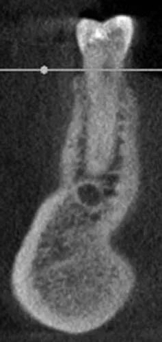
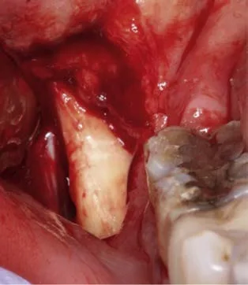

نسخه استخراجشده؛ ترجمه یا تأیید علمی انجام نشده است. وضعیت: captured
در انتخاب مادهی پیوند ساکت، یک ویژگی کلیدی هست که اغلب نادیده گرفته میشود: حفظ فضا.
انتخاب توصیهشده برای پیوند ساکت پنجدیواره: گرافت فریزدرای مینرالیزه (کورتیکو-کنسلوس ۵۰-۵۰) یا مادهای با ترکیب ۷۰ درصد مینرالیزه و ۳۰ درصد دمینرالیزه — چون فضا را حفظ میکند.
چرا حفظ فضا اینقدر مهم است؟ چون از درس قبل میدانی که در مرحلهی سوم ترمیم — حدود ۳ تا ۴ هفتگی — استخوان کورتیکال کرستال و صفحهی فاسیال نازک شروع به بازجذب میکنند. مادهای که در آن بازه فرو بریزد، نمیتواند از فروریختن ابعاد ریج جلوگیری کند.
پس معیار انتخاب ماده در ساکت، نه صرفاً استئوکانداکتیو بودن، بلکه مقاومت مکانیکی در بازهی بازجذب است. ماده باید تا وقتی که استخوان تازه شکل بگیرد، سر جایش بایستد.
و همین توضیح میدهد چرا نسبت مینرالیزه به دمینرالیزه اهمیت دارد: بخش مینرالیزه ساختار میدهد و بخش دمینرالیزه فعالیت زیستی. ترکیب ۵۰-۵۰ یا ۷۰-۳۰، تعادلی میان این دو است.
و یک مقایسهی مستقیم: FDBA بهدلیل نمکهای کلسیم و فسفات باقیمانده، بسیار کندتر جذب میشود و در نتیجه فضا را بهمراتب بهتر از DFDBA حفظ میکند.
قاعدهی کلی انتخاب: ماده باید با روند طبیعی بازسازی همزمان باشد — مادهای که خیلی سریع جذب شود، پیش از آنکه استخوان جایش را بگیرد ناپدید میشود (مثل استخوان اتوژن یا مادهی دمینرالیزه)، و مادهای که خیلی کند جذب شود (زنوگرافت یا گرافت کورتیکال مینرالیزه) هم ایدهآل نیست. DFDBA بهتنهایی در ساکت انتخاب ضعیفی است.

پروتکل پیوند ساکت بر پایهی تعداد دیوارههای باقیمانده تعریف میشود — یک نظام تصمیم ساده و کاربردی:
ساکت پنجدیواره با دیوارهی ضخیم: در بیشتر این موارد، استخوان بدون افزودن مادهی پیوند بازسازی میشود. ولی اگر تیغهی باکال کمتر از ۱٫۵ میلیمتر باشد، پیوند ساکت اندیکاسیون دارد — برای به حداقل رساندن فروریختن ساکت و تضمین استخوان کافی برای کاشت آینده.
و از یونیت ۱۳ به یاد بیاور: در ماگزیلای قدامی، تیغهی باکال در سراسر طول ریشه زیر یک میلیمتر است. یعنی در این ناحیه، عملاً همیشه زیر آستانهی ۱٫۵ میلیمتر هستی.
ساکت چهاردیواره (دیوارهی باکال از دست رفته): نیازمند آلوگرافت و ممبران با اثر طولانیتر. ساکتی که دیوارهی باکال را از دست داده، دیگر با بازسازی (regeneration) ترمیم نمیشود بلکه با ترمیم جبرانی (repair) که کندتر و کمقطعیتتر است؛ استخوان فاسیال هم هرگز بالاتر از لبهی باقیماندهی تیغهی باکال بازسازی نمیشود.
ساکت دو تا سه دیواره: اتوگرافت یا RGM بههمراه ممبران بریر.
ساکت تکدیواره: بازسازی هدایتشدهی استخوان با استخوان اتوژن، یا پیوند بلاک آنلهی استخوان اتوژن.
الگو روشن است: هرچه دیواره کمتر، ماده باید فعالتر و ممبران بادوامتر باشد — و در نهایت به بلاک میرسی.
اگر همهی دیوارهها سالماند، یک کلاژن زودجذب (پلاگ یا نوار کلاژن) روی مادهی پیوند در دهانهی ساکت کافی است؛ ممبران بادوامتر برای وقتی است که دیوارهی باکال از دست رفته.
و یک نکتهی تکنیکی تعیینکننده دربارهی ممبران: ممبران باید فقط دیوارهی باکال از دست رفته را بپوشاند؛ سایر دیوارهها نباید پوشش ممبران داشته باشند، چون این کار ترمیم ناحیه را کاهش میدهد. و قرار دادن ممبران روی سطح خارجی دیوارهی باکال باقیمانده میتواند خونرسانی و ترمیم را به خطر بیندازد.
روش توصیهشده: پس از دبریدمان کامل، ممبران کلاژن به شکل مخروط V اصلاحشده فرم داده میشود و بخش باریکش روی سطح داخلی دیوارهی باکال قرار میگیرد. سپس ساکت با مادهی پیوند در مقادیر کم و تدریجی پر میشود، و بخیهی ضربدری که ممبران و ماده را در بر بگیرد توصیه میشود.
و اگر ممبران به کار نرود، احتمال مهاجرت ذرات گرافت بیشتر است و نتیجه غیرقابل پیشبینی میشود.

پیوند فوری یا با تأخیر؟ هر دو گزینه مطرحاند و معیارشان متفاوت است.
پیوند با تأخیر دستکم ۸ هفته پس از کشیدن، احتمال عفونت گرافت را کاهش میدهد. یعنی وقتی ساکت عفونت حاد دارد (ترشح چرکی یا فیستول)، تأخیر یک انتخاب دفاعی معقول است — نه یک تعلل. تأخیر بافت بهتری هم برای بستن اولیهی محل فراهم میکند؛ بهایش یک جراحی اضافه و طول درمان بیشتر است.
در سمت مقابل، پیوند فوری از فروریختن ابعاد در همان بازهی بحرانی ۳ تا ۶ هفتگی جلوگیری میکند. یعنی این هم یک معاوضه است: حفظ ابعاد در برابر ریسک عفونت.
احتیاط سینوس. در ناحیهی مولر اول ماگزیلا که تقریباً ۴۲ درصد ریشهها درون سینوساند، پیوند ساکت با خطر ورود مادهی پیوند به داخل سینوس همراه است. یعنی پیش از قرار دادن ماده، باید از سلامت کف ساکت مطمئن شد.
محافظت از گرافت در دورهی ترمیم. این نکته را از درس قبل به یاد بیاور و حالا در بستر پیوند ببین: پروتز متحرک انتقالی نباید در ۶ تا ۸ هفتهی اول بافت را بارگذاری کند، وگرنه گرافت ممکن است متحرک شود و سکستره کند.
یعنی مراقبت از پیوند ساکت پس از جراحی هم ادامه دارد — و بخش بزرگی از آن به چیزی بستگی دارد که بیمار در دهانش میگذارد، نه به کاری که تو در اتاق جراحی کردی.
نوع سؤال: ساخت کلمه · 5 خانه
حروف منبع: ا · ا · ک · ب · ل